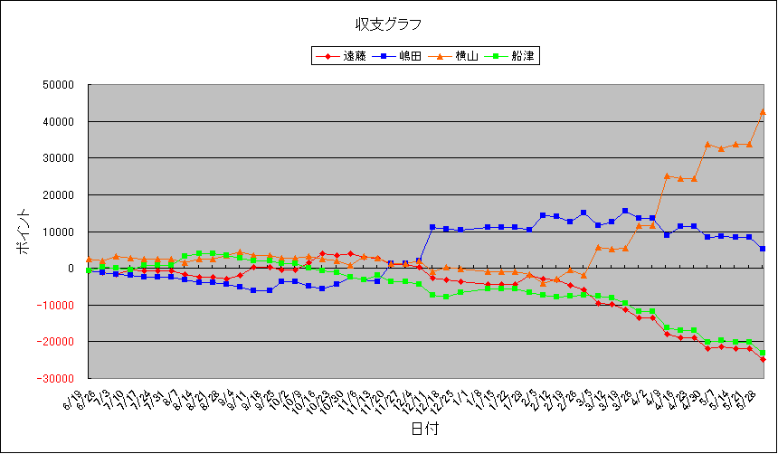

| 順位 | 馬主 | 今年度収支 | 今年度ﾎﾟｲﾝﾄ | 1頭当ﾎﾟｲﾝﾄ | 1走当ﾎﾟｲﾝﾄ | 勝率 | 連対率 | 複勝率 | ﾃﾞﾋﾞｭｰ頭数 | 勝馬頭数 | 出走回数 | 1着 | 2着 | 3着 | 4着 | 5着 | 着外 |
|---|---|---|---|---|---|---|---|---|---|---|---|---|---|---|---|---|---|
| 1 | 横山 | 42700 | 22050 | 1696.2 | 334.1 | 27.27% | 43.94% | 56.06% | 13 | 8 | 66 | 18 | 11 | 8 | 5 | 3 | 21 |
| 2 | 嶋田 | 5300 | 12700 | 907.1 | 153.0 | 16.87% | 33.73% | 42.17% | 14 | 8 | 83 | 14 | 14 | 7 | 5 | 7 | 36 |
| 3 | 船津 | -23100 | 5600 | 430.8 | 66.7 | 11.90% | 21.43% | 32.14% | 13 | 7 | 84 | 10 | 8 | 9 | 8 | 5 | 44 |
| 4 | 遠藤 | -24900 | 5150 | 367.9 | 81.7 | 15.87% | 31.75% | 44.44% | 14 | 9 | 63 | 10 | 10 | 8 | 6 | 4 | 25 |
